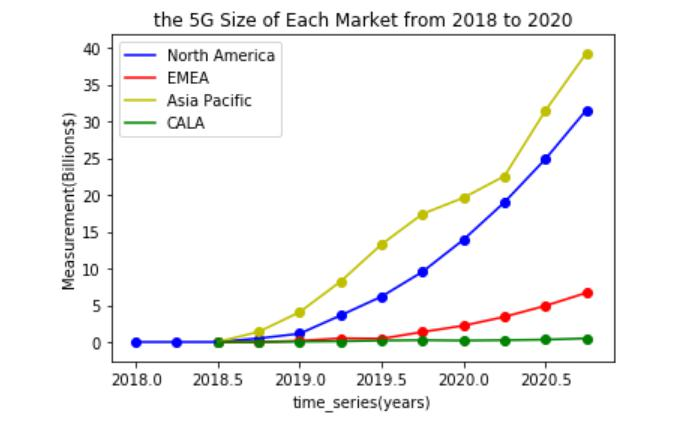
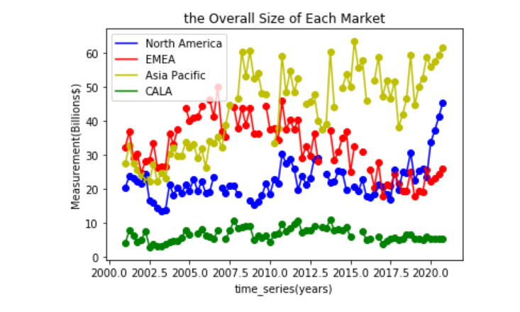
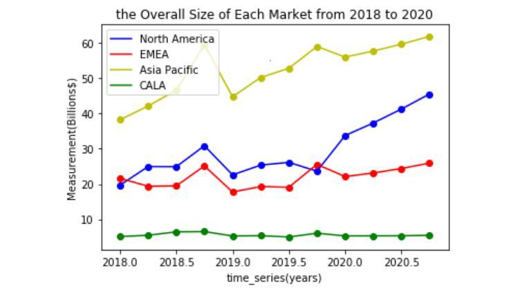

（四）数据分析与可视化¶
二.预测结果分析¶
1.5G市场规模预测结果分析¶

从预测结果可以看出，各大市场5G起步时间差距较小，但是发展体量和速度差距较大。Asia Pacific 和 North America 两大市场，2019年5G发展速度非常快，呈指数型增长。如果还保持2019年的增长速度，到2019年底，这两大市场的5G都会占据其无线接入网络市场规模的60%以上。
图中的预测结果单纯基于2019年以前的数据，并没有考虑2020年的外部冲击。若考虑2020年一季度疫情的影响，各市场的5G建设速度都必然大大降低。
2.总体市场规模预测结果分析¶
下图是1999-2020年的四大区域整体市场规模。亚太地区的整体市场规模扩张迅速，在2010年后就稳居第一。EMEA市场规模不同于其他三个区域，整体呈现下降趋势。

从上图可以看出，2020年，预计北美市场将会有大幅度扩张。将2018-2020年单独分析，如下图。图中显示出了从2018年5G起步后，各市场整体规模的变化。根据本组的预测，2020年，北美的整体市场规模将大大超过EMEA, 这主要是由于北美5G规模迅速增长，扩张了北美无线接入网络市场。而EMEA市场从4G发展就落后于亚太和北美，在5G发展上更是远远低于世界速度。
